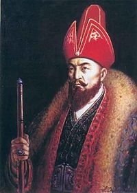

Абылай – Жәңгір ханның бесінші ұрпағы, Рахметтің досы. Жәңгір ханның Уәлибақы, Тәуке деген екі ұлы болады. Жәңгір қайтыс болып, таққа Тәуке отырғанда Уәлибақы хандыққа өкпелеп, Үргенішті билеген нағашы атасы Қайып ханның қолына барады. Уәлибақының баласы Абылай жекпе-жекке шыққанда жауы шақ келмейтін батыр болып, қанішер Абылай атаныпты. Осы Абылайдан көркем Уәли туады. Оның баласы Әбілмансұр (кейін қазаққа хан болып Абылай атанған) «ақтабан шұбырынды» жылдарында жетім қалып, үйсін Төле бидің қолына келеді. Аш-жалаңаштықтан жүдеген өңіне, өсіп кеткен шашына қарап Төле би оған «Сабалақ» деп ат қойып, түйесін бақтырады. Әбілмәмбет төренің жылқысын да бағады. Бұл, Ш.Уәлихановтың айтуына сүйенсек, Абылайдың 13 жасар кезі болса керек. Төле бидің тәлім-тәрбиесінде болуы Абылайға зор ықпал жасады. Қазақ даласының даналығын бойына жинаған баба ақылы мен парасатын, ел билеу қабілетін, анталаған жауға қарсы қазақ халқы басы біріксе ғана тойтарыс бере алатынын жас баланың санасына ұялата білген. Оған қоса бала кезінен көрген жұпыны тіршілік, өмірлік тәжірибе Абылайдың ел өміріне ерте араласуына себепші болды. Бұқар, Үмбетей жыраулардың, т.б. ауыз әдебиетінің ірі өкілдерінің мәліметтеріне қарағанда, Абылай жиырма жасында қан майданда ерлігімен танылған. Бұқардың Абылайға «Сен жиырма жасқа жеткен соң, Алтын тұғыр үстінде Ақ сұңқар құстай түледің» деуі осының дәлелі.